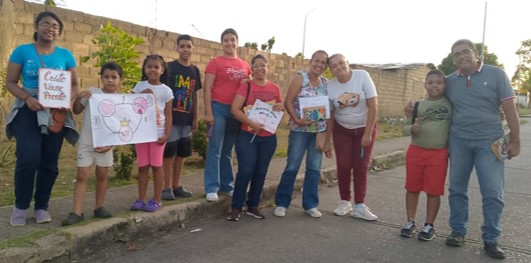
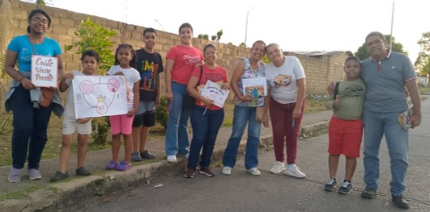
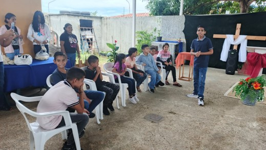

Dios Obra en nuestras vidas
En este mensaje el Dr. Adrian Roger enfatiza el amor de Cristo como única fuente de la felicidad y nos habla acerca del gozo, la paz, el amor y la llenura del Espíritu Santo
IML Casa de Dios en Acción
 

Anuncios
La Fidelidad de Dios




El Señor Viene Pronto...